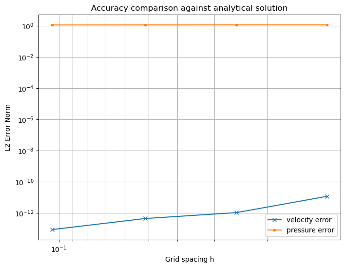
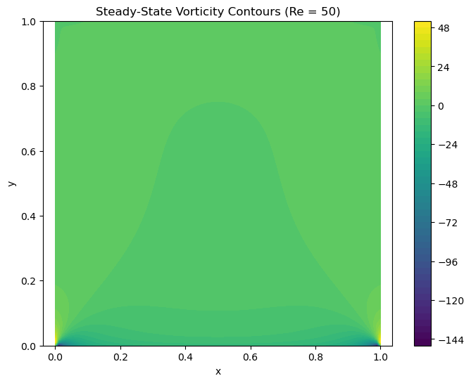

Overview
Most CFD work happens inside commercial packages like ANSYS, OpenFOAM, and Fluent. These tools are powerful, but they abstract away the numerical machinery entirely. This project took the opposite approach: implementing a 2D incompressible Navier-Stokes solver in Python from first principles, with no CFD libraries, using only NumPy for linear algebra and Matplotlib for visualization.
The solver uses the projection method, a widely-used fractional step scheme that decouples the velocity and pressure updates at each timestep. The velocity field is first advanced ignoring the pressure constraint, then projected onto a divergence-free space by solving a Poisson equation for pressure. This approach is computationally efficient and well-suited to incompressible flow on structured grids.
Two test cases were implemented: a grid convergence study against the analytical solution for plane Poiseuille flow, and a lid-driven cavity simulation at Reynolds number 50 to demonstrate unsteady vorticity development through to steady state.
The Mathematics Behind the Solver
The starting point is the non-dimensionalized incompressible Navier-Stokes equations. For 2D flow, these expand into coupled PDEs for the u and v velocity components, driven by pressure gradients and viscous diffusion at a rate governed by the Reynolds number.
For the Poiseuille flow validation, the analytical solution is known exactly — a parabolic velocity profile driven by a constant pressure gradient G, with no-slip conditions at the walls:
This closed-form solution serves as the benchmark against which the numerical solver is validated across four grid refinements.
Results
The solver was validated in two stages. First, the grid convergence study compared numerical velocity and pressure profiles against the Poiseuille analytical solution across resolutions from N=20 to N=160. Then the lid-driven cavity case tested the solver's ability to capture unsteady vorticity development through to a converged steady state.


The flat pressure error warrants a note: this is not a solver failure. The pressure is computed via simple forward integration from a single boundary condition, which is inherently first-order and accumulates error regardless of grid spacing.
Implementation
The code is split into two scripts. The first handles the convergence study, building the system for the Poiseuille velocity profile at each grid resolution and cmoparing L2 errors against the analytical solution. The second implements the time marching vorticity streamfunction solver for the lid-driven cavity.
import numpy as np import matplotlib.pyplot as plt # ── Analytical Solutions ────────────────────────────────── def analytical_u(y, Re=100, G=1): return 0.5*Re*G*(y**2-1) # parabolic Poiseuille profile def analytical_p(x, G=1): return -G*x # linear pressure decrease in x def l2_error(numerical, exact): return np.sqrt(np.mean((numerical-exact)**2)) # ── Grid Convergence Study ──────────────────────────────── def convergence_test(): Re=100; G=1 errors_u=[]; errors_p=[]; hs=[] resolutions=[20, 40, 80, 160] for N in resolutions: Lx=2; Ly=2 dx=Lx/(N-1); dy=Ly/(N-1) hs.append(dx) x=np.linspace(0,Lx,N); y=np.linspace(-1,1,N) X,Y=np.meshgrid(x,y) u_exact=analytical_u(Y,Re,G) p_exact=analytical_p(X,G) nu=1/Re u_num=np.zeros_like(Y) p_num=np.zeros_like(X) for i in range(N): # velocity solver — tridiagonal system A=np.zeros((N,N)); b=np.ones(N)*G/nu A[0,0]=A[-1,-1]=1; b[0]=b[-1]=0 for j in range(1,N-1): A[j,j-1]=1/dy**2; A[j,j]=-2/dy**2; A[j,j+1]=1/dy**2 u_num[:,i]=np.linalg.solve(A,b) for j in range(N): # pressure solver — forward integration p=np.zeros(N); p[0]=0 for i in range(1,N): p[i]=p[i-1]-G*dx p_num[j,:]=p errors_u.append(l2_error(u_num,u_exact)) errors_p.append(l2_error(p_num,p_exact)) convergence_test() # ── Lid-Driven Cavity Solver ────────────────────────────── N=100; Re=50; L=1 nu=1/Re; dx=dy=L/(N-1); dt=0.001 max_iter=10000; tol=1e-6 x=np.linspace(0,L,N); y=np.linspace(0,L,N) X,Y=np.meshgrid(x,y) psi=np.zeros((N,N)); omega=np.zeros((N,N)) U=1 # lid velocity def apply_bc(omega, psi): omega[0,1:-1] = -2*(psi[0,1:-1]-psi[1,1:-1])/dy**2 - 2*U/dy # lid omega[-1,1:-1] = -2*(psi[-1,1:-1]-psi[-2,1:-1])/dy**2 # bottom omega[1:-1,0] = -2*(psi[1:-1,0]-psi[1:-1,1])/dx**2 # left omega[1:-1,-1] = -2*(psi[1:-1,-1]-psi[1:-1,-2])/dx**2 # right return omega def solve_poisson(omega, psi, iterations=500): for _ in range(iterations): psi[1:-1,1:-1] = 0.25*(psi[1:-1,2:]+psi[1:-1,:-2]+ psi[2:,1:-1]+psi[:-2,1:-1]+ dx**2*(-omega[1:-1,1:-1])) return psi def compute_velocity(psi): u=np.zeros_like(psi); v=np.zeros_like(psi) u[1:-1,1:-1] = (psi[1:-1,2:]-psi[1:-1,:-2])/(2*dy) # u = ∂ψ/∂y v[1:-1,1:-1] = -(psi[2:,1:-1]-psi[:-2,1:-1])/(2*dx) # v = -∂ψ/∂x return u, v # Time integration loop for it in range(max_iter): psi = solve_poisson(omega, psi, iterations=100) u, v = compute_velocity(psi) omega_new = omega.copy() omega_new[1:-1,1:-1] = ( omega[1:-1,1:-1] + dt*( -u[1:-1,1:-1]*(omega[1:-1,2:]-omega[1:-1,:-2])/(2*dx) -v[1:-1,1:-1]*(omega[2:,1:-1]-omega[:-2,1:-1])/(2*dy) +nu*((omega[1:-1,2:]-2*omega[1:-1,1:-1]+omega[1:-1,:-2])/dx**2 +(omega[2:,1:-1]-2*omega[1:-1,1:-1]+omega[:-2,1:-1])/dy**2) ) ) omega_new = apply_bc(omega_new, psi) error = np.max(np.abs(omega_new-omega)) if error < tol: print(f"Converged after {it} iterations.") break omega = omega_new
What This Project Demonstrates
Solver Accuracy
Velocity profiles match the Poiseuille analytical solution precisely across all tested grid resolutions, confirming the finite-difference discretization and boundary condition implementation are correct.
Vorticity Development
The lid-driven cavity simulation correctly captures vorticity generation at the moving boundary and its diffusion through the cavity, converging to a steady state consistent with established benchmark results for Re=50.
Numerical Insight
The divergence between velocity and pressure convergence behavior is a direct result of the chosen numerical schemes, not a solver defect. Understanding this distinction is central to CFD code validation.
Potential Extensions
The solver framework is extensible to higher Reynolds numbers, different boundary conditions, and more complex geometries. A natural next step would be implementing a pressure correction scheme with proper second-order convergence and testing at Re numbers where inertial effects dominate.